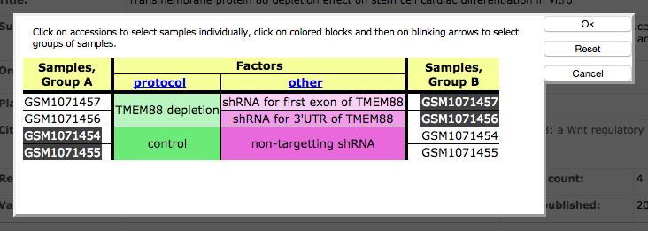

GEO2Enrichr
GEO2Enrichr
Google Chrome Extension to extract gene sets from GEO and analyze these lists for common biological functions. Click here to install it.
Summary
GEO2Enrichr is a Google Chrome Extension and Python server developed to ease the extraction of signatures from studies posted on the Gene Expression Omnibus (GEO) database. These signatures are then submitted to Enrichr, a gene signature search engine containing over 70,000 annotated signatures, for downstream functional analysis. GEO2Enrichr is open source and will be hosted on GitHub upon publication acceptance of an article describing the software. GEO2Enrichr is being actively developed by the Ma'ayan Laboratory at the Icahn School of Medicine at Mount Sinai as a part of the efforts of the BD2K-LINCS-DCIC and KMC-IDG NIH Common Fund sponsored centers.
Abstract
Identification of differentially expressed genes from gene expression profiling studies is a necessary and important step in the analysis of microarray and RNA-seq data. Such data is deposited into the Gene Expression Omnibus (GEO). However, currently, to extract and analyze differentially expressed genes from GEO requires significant computational expertise. GEO2Enrichr has a front-end browser extension and back-end server. The back-end is written in Python and uses the Flask framework for the web application server. The server exposes three API endpoints to: (1) query GEO; (2) identify the differentially expressed genes; and (3) query Enrichr. The API endpoints are chained into a useful data pipeline. The front-end is a Google Chrome Extension written in JavaScript and CSS and programmatically inserts HTML elements into the native GEO interface. The Chrome web browser loads the extension whenever the user navigates to an NCBI GEO webpage. GEO2Enrichr unobtrusively inserts itself onto the page as a single button and checkboxes for easy sample selection. The button opens a modal box that allows users to edit their selected data, choose settings for differential expression identification, insert metadata about the experiments, download their resultant gene lists, and submit their gene lists to Enrichr for further analysis. Differential expression analysis has five options: Characteristic Direction, T-test, limma, SAM and fold-change. Other options are available to control for the size of the resultant differentially expressed gene lists by setting p-value and FDR cutoffs. GEO2Enrichr is a Google Chrome Extension and Python-based API that adds functionality to GEO by allowing users to pipe Simple Omnibus Format in Text (SOFT) files to a differential expression analysis tool, and then pipe the differentially expressed genes for analysis with Enrichr, a popular gene list enrichment analysis web application. GEO2Enrichr addresses a need for improved functionality of GEO by embedding new features into the existing GEO pages, allowing researchers to easily select samples and process them for differential expression by various methods and perform enrichment analyses. GEO2Enrichr is free and available for installation at the Chrome Web Store. GEO2Enrichr can facilitate the more broad reusability of the GEO resource by lowering the point of entry to biologists without computational expertise. The systematic use of GEO2Enrichr can generate a new useful searchable resource. Overall, GEO2Enrichr can lead to improved extraction of knowledge from data.
Installation
Click here to install GEO2Enrichr as an extension in your Chrome browser.
Clicking the +FREE button will install and activate the application. The Chrome Web Store will ask you to accept GEO2Enrichr's permission settings. The GEO2Enrichr application needs permission to make HTTP requests to our server for processing the dataset you will select when interacting with entries listed on the GEO site.
Tutorial
GEO2Enrichr works by embedding additional functionality into relevant GEO pages that you visit. For example, after installing the Chrome Extension, visiting the page GDS5077 and clicking "Compare 2 sets of samples", you should see a new hypertext that says "Pipe to Enrichr" (Fig. 1).

Fig. 1 Screenshot that shows how GEO2Enrichr adds an additional step to the GEO datasets pipeline.
If you immediately click that hypertext, you will receive a warning: "Please select 2 or more control samples." This warning occurs because GEO2Enrichr needs you to specify the datasets that you would like to download, process, and analyze. Click "Select which Samples to put in Group A and Group B" and select two groups of samples: control samples on the left and treatment/condition samples on the right. In this example, GSM1071454 and GSM1071455 are the control samples and GSM1071457 and GSM1071457 are the treatment or condition samples (Fig. 2). It is important that the control samples are selected on the left and treatment samples are selected on the right because this information is used to determine the up-regulated and down-regulated genes direction.
Fig. 2 Screenshot to show how to identify the control and treatment/condition samples on the GEO datasets site.
Now you can open GEO2Enrichr. Click Pipe to Enrichr to see the application's main modal dialog box (Fig. 3).

Fig. 3 Screenshot of the GEO2Enrichr main modal dialog box.
The GEO2Enrichr application screen scrapes the GEO webpage for relevant data including the data the user selected. Please confirm that the accession number, platform, organism, and sample files are all correct. You can edit the first three fields by clicking on their text. If you need to change the sample selection, you must close GEO2Enrichr and re-select the samples via the GEO dataset interactive interface (Step 2).
Please fill in any metadata about the experiment, such as cell type or tissue, perturbation, and manipulated gene (if relevant). This metadata will be used to annotate your downloadable filenames and a description that uses this information will be sent to Enrichr.
Finally, click the Submit samples button to submit your data selection to GEO2Enrichr for data processing. Depending on the size of SOFT files and the number of samples you selected, this can take anywhere from a few seconds to a minute or two. A progress bar will keep you updated on the progress. Once the processing is complete, the output will show three links to Enrichr, one for up genes, one for down genes, and one for both up and down combined. In addition to these buttons, you will be provided with a button to download your gene lists as text files.
Data processing
Given sample selection accession numbers, GEO2Enrichr analyzes these samples by performing the following operations:
- Downloads the associated SOFT file from GEO.
- Discards data with missing values or one-to-many probe-to-gene mappings.
- log2 transforms the data if necessary.
- Quantile normalizes the data if necessary.
- Averages multiple probes to single genes.
- Identifies differentially expressed genes with the selected method. The default method is the characteristic direction method, developed by the Ma'ayan Laboratory and shown to outperform all other popular methods.
- Writes the top and bottom differentially expressed genes into text.
- Pipes the gene lists to Enrichr for further analysis.
API
GEO2Enrichr can be accessed programmatically using APIs.
All requests should go to the http://amp.pharm.mssm.edu/g2e/full endpoint:
| accession | A valid accession number for GEO, e.g. accession=GDS5077. |
| platform | The associated platform for a given accession number, e.g. platform=GPL10558. |
| control | A hyphen-separated list of GSM files, e.g.control=GSM1071454-GSM1071455 |
| experimental | A hyphen-separated list of GSM files, e.g.experimental=GSM1071457-GSM1071456 |
| organism | An organism, e.g. organism=homo+sapiens. Note that GEO2Enrichr and Enrichr currently only support human and mouse genes. |
| cell | The cell or tissue type used in the experiment, e.g. cell=RUES2. |
| perturbation | A perturbation, e.g. perturbation=depleted+TMEM88 |
| gene | If relevant, the manipulated gene. |
| Valid request | http://amp.pharm.mssm.edu/g2e/full?accession=GDS5077&platform=GPL10558&control=GSM1071454-GSM1071455&experimental=GSM1071457-GSM1071456 |
Contact
Please contact Avi Ma’ayan and Gregory Gundersen for comments, suggestions, and support: avi.maayan@mssm.edu, gregory.gundersen@mssm.edu.